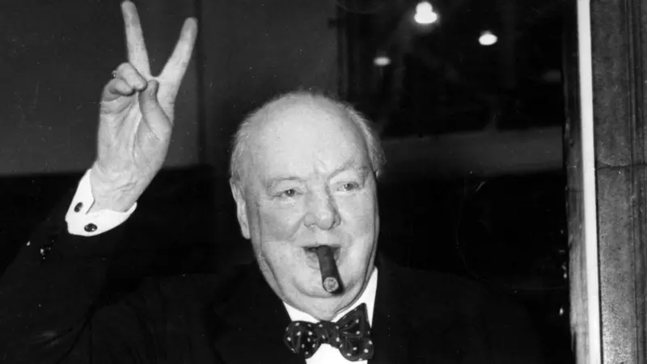

วินสตัน เชอร์ชิลล์ (Winston Churchill)

เป็นรัฐบุรุษ นายทหาร และนักเขียนชาวบริติชผู้ดำรงตำแหน่งนายกรัฐมนตรีสหราชอาณาจักรคนที่ 19 ตั้งแต่ ค.ศ.1941 ถึง 1945 (ระหว่างสงครามโลกครั้งที่สอง) และอีกครั้งตั้งแต่ ค.ศ.1951 ถึง 1955 ในช่วงระหว่าง ค.ศ.1900 ถึง 1964 เป็นเวลาประมาณ 62 ปี เขาเป็นสมาชิกสมาชิกรัฐสภา (สหราชอาณาจักร) (MP) และเป็นผู้แทนของเขตเลือกตั้งทั้งหมด 5 เขตในช่วงเวลานั้น ในด้านอุดมการณ์ เขาเป็นผู้ยึดมั่นในเสรีนิยมทางเศรษฐกิจและจักรวรรดินิยม ตลอดอาชีพส่วนใหญ่ของเขา เขาเป็นสมาชิกของพรรคอนุรักษนิยม ซึ่งเขาเป็นผู้นำตั้งแต่ ค.ศ.1940 ถึง 1955 เขาเป็นสมาชิกพรรคเสรีนิยมตั้งแต่ ค.ศ.1904 to 1924